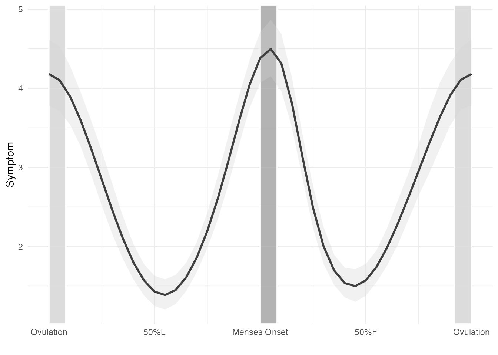
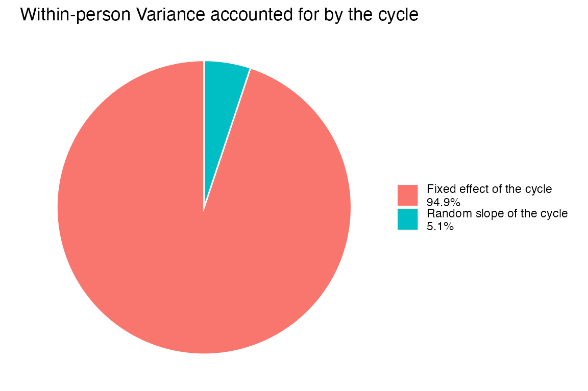

Getting Started with menstrualcycleR and Phase-Aligned Cycle Time Scaling (PACTS)
Anisha Nagpal, Tory Eisenlohr-Moul
menstrualcycleR-overview.RmdWhat is PACTS, Scaled Cycle Time, and
menstrualcycleR?
Understanding the Challenge
Despite decades of research, there is still no standard method for operationalizing the menstrual cycle as a continuous and cyclical biological process. Traditional approaches—such as categorical phase labels or linear day-counting methods—oversimplify the cycle and introduce misalignment with underlying hormonal patterns. These methods often assume ovulation occurs at cycle midpoint and ignore variation in follicular versus luteal phase lengths, leading to reduced power, misclassification, and inconsistent findings across studies.
Introducing PACTS
Phase-Aligned Cycle Time Scaling (PACTS) is a method
that standardizes menstrual cycle time as a continuous variable aligned
to hormonally meaningful anchors:
- Menses onset - Ovulation
Rather than dividing the cycle into arbitrary phases or counting forward from menses, PACTS treats the cycle as a dynamic, time-varying system and provides a framework to realign repeated measures (e.g., mood, symptoms, physiology) across individuals and cycles.
The PACTS method is implemented in the R package
menstrualcycleR, which provides tools for: - Assigning
cycle days and cycle numbers - Estimating or importing ovulation
information - Creating scaled time variables centered on ovulation or
menses - Visualizing and checking cycle-level data
Why Continuous Cycle Modeling?
Shifting from categorical phase-based methods to continuous modeling offers several advantages:
- Increased statistical power: More observations per cycle can be included in analyses without discarding off-phase days.
- Better precision: Continuous time captures subtle, within-phase changes that are masked by averaging over phases.
- More flexible modeling: Mixed-effects models, splines, and time-varying predictors can be used to model within- and between-person variation in cycle dynamics.
See Eisenlohr-Moul et al. (2020), Schmalenberger et al. (2024), and Reen & Kiesner (2016) for supporting discussions.
Anchoring on Ovulation and Menses
Most prior approaches count days forward from menses onset or backward from the end of the cycle, but they fail to align data by ovulation, which is the key inflection point in hormonal dynamics.
- The follicular phase (from menses to ovulation) is highly variable in length.
- The luteal phase (from ovulation to next menses) is more consistent across individuals and cycles.
Accordingly, PACTS assigns scaled time using: - Ovulation day = 0 when modeling ovulation-centered dynamics - Menses day = 0 when studying perimenstrual processes (e.g., dysmenorrhea)
When modeling menses-centered, the cycle is scaled from -1 to +1, with menses = 0, with negative values representing the luteal phase and positive values representing the follicular phase. When modeling ovulation-centered, estimated day of ovulation = 0, and psotive values represent the follicular phase and negative values represent the luteal phase. This allows for flexible model fitting while retaining a biologically meaningful time structure.
Estimating Ovulation When Biomarkers Are Unavailable
When ovulation is not confirmed using biomarkers (e.g., LH surge, BBT), PACTS uses a population-average method by assigning the day of ovulation as 15 days prior to the next menses onset (i.e., the last day of the follicular phase).
This backward-counting method is preferable to mid-cycle assumptions, which often misclassify ovulation in cycles with short or long follicular phases. The use of biomarkers is still recommended whenever possible to ensure precise alignment.
Functions in menstrualcycleR automatically flag imputed
ovulation using a binary column (ovtoday_impute) so that
users can report and model uncertainty.
Purpose and Use Cases
The ultimate goal of PACTS and menstrualcycleR is to
provide an open, reproducible framework to support cycle-based research
in: - Affective and behavioral science -
Clinical research on hormone-related disorders (e.g.,
PMDD, catamenial epilepsy) - Women’s health and precision
medicine
By using a continuous, biologically aligned cycle time variable, researchers can better detect nuanced patterns in symptoms, physiology, and behavior that vary across the menstrual cycle.
Data Requirements for Utilizing PACTS and
menstrualcycleR
To apply the Phase-Aligned Cycle Time Scaling (PACTS) method and
other core functionalities of the menstrualcycleR package,
researchers must ensure their dataset meets several key criteria:
1. Daily Data with Self-Reported Menses Onset
Accurate identification of menstrual cycle boundaries is essential. At a minimum, the dataset must include:
-
Self-reported menses onset dates throughout the
study period
- The next menses onset date following study completion, to ensure full-cycle alignment
These dates are used to define the start of each cycle and compute standardized time variables.
Note: Menses onset cannot be imputed and must be provided for all usable cycles.
2. Ovulation Assessment or Imputation
The estimated day of ovulation (EDO) is required for analyses centered on the ovulatory phase. Ovulation may be:
-
Directly confirmed using biomarkers such as:
- Luteinizing hormone (LH) tests (EDO is day after positive test, LH+1 and must be reflected in input dataset)
- Basal body temperature (BBT) (EDO is day after the nadir, nadir+1 and must be reflected in input dataset)
- Ultrasound or hormone assays
-
Imputed, if biomarkers are unavailable, based on
the assumption of a 14–15 day luteal phase. In this case, ovulation is
assigned as 15 days before the next menses onset by
menstrualcycleR
Imputed ovulation days are recorded in a binary column,
ovtoday_impute, created when using
menstrualcycleR distinguishing them from confirmed values.
Researchers are strongly encouraged to report the proportion of
confirmed versus imputed ovulation days for transparency and scientific
rigor.
3. Cycle Length Inclusion Criteria
By default, menstrualcycleR includes only cycles between
21 and 35 days in length for standardized time variable
computation. Cycles outside this range are excluded because they often
show:
- Greater variability in timing
- Increased likelihood of anovulation
This range can be modified by the user, especially in cases where ovulation is confirmed for all cycles and the study population includes naturally shorter or longer cycles.
Additonally, menstrualcycleR will only scale luteal
phases if the length is 7 and 18 days. This judgement
is based on norms from over 600,000 ovulatory cycles reported in Bull et
al., (2019).
4. Supported Variables and Formats
The dataset should include the following columns:
| Column Name | Description |
|---|---|
id |
Unique participant identifier that needs to be a numeric type, it cannot be labeled with characters such as ID001, ID002, … |
date |
Calendar date of each observation. Ensure all id-date combinations are unique. You may wish to reclassify post-midnight survey entries to the previous day to maintain alignment with sleep or daily tracking data. |
menses |
Binary indicator of menses onset (1 = yes, 0 = no)/ first day of menstruation. Periovulatory spotting should also be excluded. |
ovtoday |
Binary indicator of confirmed ovulation day (optional) |
symptom variables |
Daily ratings of outcomes |
Installation of the menstrualcycleR package
Currently the menstrualcycleR package is hosted on the
Eisenlohr-Moul Lab’s (CLEAR Lab: Clarifying the Endocrinology of Acute
Risk) GitHub repository.
To install it from GitHub, install and load the package `remotes`` by running:
install.packages("remotes")then install and load the menstrualcycleR package by
running:
remotes::install_github("eisenlohrmoullab/menstrualcycleR")
library(menstrualcycleR)
#> Welcome to the menstrualcycleR package!
#> If you use this package, please cite:
#> Nagpal, A., Schmalenberger, K. M., Barone, J., Mulligan, E. M., Stumper, A., Knol, L., … Eisenlohr-Moul, T. A., PhD. (2025, May 6). Studying the Menstrual Cycle as a Continuous Variable: Implementing Phase-Aligned Cycle Time Scaling (PACTS) with the `menstrualcycleR` package. https://doi.org/10.31219/osf.io/hd5xw_v1Note that the menstrualcycleR package depends on several
other packages (mostly packages from the tidyverse suite).
This vignette also uses tidyverse functions so it is
recommended to install and load the tidyverse suite by
running:
install.packages("tidyverse")
library(tidyverse)
#> ── Attaching core tidyverse packages ──────────────────────── tidyverse 2.0.0 ──
#> ✔ dplyr 1.1.4 ✔ readr 2.1.5
#> ✔ forcats 1.0.0 ✔ stringr 1.5.1
#> ✔ ggplot2 3.5.2 ✔ tibble 3.3.0
#> ✔ lubridate 1.9.4 ✔ tidyr 1.3.1
#> ✔ purrr 1.1.0
#> ── Conflicts ────────────────────────────────────────── tidyverse_conflicts() ──
#> ✖ dplyr::filter() masks stats::filter()
#> ✖ dplyr::lag() masks stats::lag()
#> ℹ Use the conflicted package (<http://conflicted.r-lib.org/>) to force all conflicts to become errorsAlternatively, individual packages can be loaded independently:
library(dplyr)
library(ggplot2)
library(purrr)
library(tibble)
library(tidyr)
library(stringr)
library(magrittr)Additionally in this vignette, we will cover options to use the
continuous cycle time measures generated by menstrualcycleR
in nonlinear multilevel analyses using the mgcv,
gam.hp, and marginaleffects packages. You can
install and load these packages by running:
install.packages("mgcv")
install.packages("gam.hp")
install.packages("marginaleffects")
library(mgcv)
#> Loading required package: nlme
#>
#> Attaching package: 'nlme'
#> The following object is masked from 'package:dplyr':
#>
#> collapse
#> This is mgcv 1.9-1. For overview type 'help("mgcv-package")'.
library(gam.hp)
#> Thank you for using this package! If you use this package in your research, please cite the following references
#> Jiangshan Lai, Jing Tang, Tingyuan Li, Aiying Zhan, Lingfeng Mao. 2024. Evaluating the relative importance of predictors in Generalized Additive Models using the gam.hp R package. Plant Diversity, 46(4): 542-546
library(marginaleffects)Using menstrualcycleR
Overview of Package Functions
The menstrualcycleR package contains four main
categories of functions:
1. Cycle Scaling Function: pacts_scaling()
This function adds standardized cycle time variables to your dataset.
scaled_cycleday:
A continuous cycle time variable centered on menses onset (menses == 1 → 0), ranging from –1 (start of luteal phase) to +1 (ovulation). This maps -1 and +1 as adjacent days. This is what the supplementary analyses of Nagpal et al. (2025) include. Includes only biomarker-confirmed ovulation cycles.scaled_cycleday_impute:
Same as above, but also includes cycles with imputed ovulation (assigned to day –15 before next menses). Increases dataset coverage, but with lower precision. This maps -1 and +1 as adjacent days. This is what the supplementary analyses of Nagpal et al. (2025) include.scaled_cycleday_ov:
A cycle time variable centered on ovulation (ovtoday == 1 → 0), ranging from –1 (start of follicular phase) to +1 (end of luteal phase). Biomarker-confirmed ovulation only. This maps -1 and +1 as adjacent days. This is what the supplementary analyses of Nagpal et al. (2025) include.scaled_cycleday_imp_ov:
Same as above, but includes imputed ovulation (ovtoday_impute == 1) for cycles lacking confirmation. Centered on either confirmed or imputed ovulation. This maps -1 and +1 as adjacent days. This is what the supplementary analyses of Nagpal et al. (2025) include.cyclic_time:
A continuous cycle time variable centered on menses onset (menses == 1 → 0), ranging from –1 (start of luteal phase) to +1 (ovulation). Includes only biomarker-confirmed ovulation cycles. This ensures that -1 and +1 are hormonally equivalent, rather than adjacent. This is what the main analyses of Nagpal et al. (2025) include. Other iterations of cycle time (scaled_cycleday) are being phased out.cyclic_time_impute:
Same as above, but also includes cycles with imputed ovulation (assigned to day –15 before next menses). Increases dataset coverage, but with lower precision. This ensures that -1 and +1 are hormonally equivalent, rather than adjacent. This is what the main analyses of Nagpal et al. (2025) include. Other iterations of cycle time (scaled_cycleday) are being phased out.cyclic_time_ov:
A cycle time variable centered on ovulation (ovtoday == 1 → 0), ranging from –1 (start of follicular phase) to +1 (end of luteal phase). Biomarker-confirmed ovulation only. This ensures that -1 and +1 are hormonally equivalent, rather than adjacent. This is what the main analyses of Nagpal et al. (2025) include. Other iterations of cycle time (scaled_cycleday) are being phased out.cyclic_time_imp_ov:
Same as above, but includes imputed ovulation (ovtoday_impute == 1) for cycles lacking confirmation. Centered on either confirmed or imputed ovulation. This ensures that -1 and +1 are hormonally equivalent, rather than adjacent. This is what the main analyses of Nagpal et al. (2025) include. Other iterations of cycle time (scaled_cycleday) are being phased out.ovtoday_impute:
A binary indicator identifying imputed ovulation days (value = 1), estimated as 15 days before the next menses onset.
2. Data Checking Functions
These functions assess the completeness and coverage of your dataset:
cycledata_check():
Summarizes non-missing data by cycle phase (follicular, luteal) and overall. Also produces visualizations by participant and cycle phase.-
summary_ovulation():
Reports ovulation detection status:- How many cycles had biomarker-confirmed ovulation
- How many cycles required imputed ovulation using
the day –15 rule (
ovtoday_impute == 1), based on standard luteal phase length
3. Data Visualization Functions
Use these functions to plot outcomes across the menstrual cycle:
cycle_plot():
Creates a sample-level plot of symptom or outcome trajectories across the standardized cycle. Supports centering on either menses or ovulation, with flexible y-axis scaling.cycle_plot_individual():
Provides participant-level plots across cycles for selected symptoms. Useful for individual inspection or diagnostic review.
Both functions: - Calculate per-cycle means and deviations - Allow centering on menses or ovulation - Are compatible with scaled time variables
4. Launching the Shiny App: launch_app()
This function launches an interactive Shiny application for uploading, checking, and analyzing menstrual cycle data using the package functions.
The app includes tools for: - Scaled cycle time computation - Data completeness checks - Visualization by person and symptom - PMDD, MRMD, and PME diagnosis using the Carolina Premenstrual Assessment Scoring System (C-PASS) - Please note that cycles utilized for diagnosis in the CPASS are defined by counting days forward (+10) and backward (-7) from menses onset.
C-PASS is implemented via the
cpassR package. Please cite this package if you utilize the CPASS tool in the shiny app:
Symul L, Eisenlohr-Moul T (2025). cpass: PMDD and MRMD Diagnoses Following The Carolina Premenstrual Assessment Scoring System (C-PASS). R package version 0.1.0.
For more on C-PASS as a diagnostic tool, see:
Eisenlohr-Moul, T. A., Girdler, S. S., Schmalenberger, K. M., Dawson, D. N., Surana, P., Johnson, J. L., & Rubinow, D. R. (2017).
Toward the Reliable Diagnosis of DSM-5 Premenstrual Dysphoric Disorder: The Carolina Premenstrual Assessment Scoring System (C-PASS).
American Journal of Psychiatry, 174(1), 51–59. https://doi.org/10.1176/appi.ajp.2016.15121510 Please cite this paper if you utilize the CPASS tool in the shiny app.
The shiny app is also accessible online here:
👉 https://menstrualcycledata.shinyapps.io/shiny/
Demo dataset
To explore the menstrualcycleR package, we will use a
demo dataset with simulated daily ratings (labeled as
symptom) from 25 participants with menses onset and
ovulation information. This data is simulated and is not representative
of any particular outcome you may study across the cycle. The variable
menses has a 1 when indicating first day of menstruation or
menses onset. The variable ovtoday has a 1 when indicating
the day after a positive luteinizing-hormone test, estimating the day of
ovulation.
Applying PACTS
cycle_df_scaled = pacts_scaling(data = cycle_df, id = id, date = daterated, menses = menses, ovtoday = ovtoday, lower_cyclength_bound = 21, upper_cyclength_bound = 35)
#> id: id
#> date: date
#> menses: menses
#> ovtoday: ovtodayFor full documentation, type ?pacts_scaling() in R
console. The lower and upper cycle length bounds may be adjusted, but
the default is 21-35 days as that was what was validated in Nagpal et
al., (2025). Only cycles between 21 and 35 days will get scaled, or if a
luteal phase with confirmed ovulation and menses onset is between 7-18
days.
cycle_df_scaled will now have additional variables as
well as observations. In this dataset we went from initially having 614
observations in cycle_df and then having 739 observations
in cycle_df_scaled. When scaling the cycle using
pacts_scaling(), each cycle is required to have a complete
sequence of calendar days from menses onset to the next menses onset. If
a participant missed reporting symptoms on any day within a cycle, the
function inserts placeholder rows with NA values to ensure
continuity. This process allows accurate computation of cycle-aligned
time variables.
Before and After: Filling Missing Dates Within a Cycle
Below is an example showing how pacts_scaling() fills in
rows for missing dates in a real participant’s cycle.
Original data (cycle_df)
| id | menses | ovtoday | symptom | daterated |
|---|---|---|---|---|
| 1 | 1 | 0 | 5 | 2024-01-20 |
| 1 | 0 | 0 | 4 | 2024-01-21 |
| 1 | 0 | 0 | 1 | 2024-01-22 |
| 1 | 0 | 0 | 2 | 2024-01-24 |
| 1 | 0 | 0 | 3 | 2024-01-25 |
| 1 | 0 | 0 | 5 | 2024-01-26 |
- This participant skipped reporting on 2024-01-23.
- The time series is incomplete for cycle scaling until the gap is filled.
After scaling (cycle_df_scaled)
| id | menses | ovtoday | symptom | daterated |
|---|---|---|---|---|
| 1 | 1 | 0 | 5 | 2024-01-20 |
| 1 | 0 | 0 | 4 | 2024-01-21 |
| 1 | 0 | 0 | 1 | 2024-01-22 |
| 1 | 0 | 0 | NA | 2024-01-23 |
| 1 | 0 | 0 | 2 | 2024-01-24 |
| 1 | 0 | 0 | 3 | 2024-01-25 |
| 1 | 0 | 0 | 5 | 2024-01-26 |
- The function inserts a placeholder row for 2024-01-23 with
NAin thesymptomcolumn. - This ensures complete daily continuity from menses to the end of the cycle.
Summary of Row Counts
| Dataset | Observations | Description |
|---|---|---|
cycle_df |
619 | Original data; only dates with reports |
cycle_df_scaled |
744 | Additional rows added to fill date gaps |
By ensuring complete daily coverage, pacts_scaling()
allows downstream modeling and visualization tools to interpret
menstrual cycle time as a continuous, standardized variable across
individuals and cycles.
Cycle time variables are added in cycle_df_scaled
names(cycle_df_scaled)
#> [1] "id" "date" "menses"
#> [4] "ovtoday" "symptom" "daterated"
#> [7] "m2mcount" "mcyclength" "cycle_incomplete"
#> [10] "cyclenum" "ovtoday_impute" "scaled_cycleday"
#> [13] "scaled_cycleday_ov" "scaled_cycleday_impute" "scaled_cycleday_imp_ov"
#> [16] "cyclic_time" "cyclic_time_impute" "cyclic_time_ov"
#> [19] "cyclic_time_imp_ov" "luteal_length"scaled_cycleday:
A continuous cycle time variable centered on menses onset (menses == 1 → 0), ranging from –1 (start of luteal phase) to +1 (ovulation). Includes only biomarker-confirmed ovulation cycles.scaled_cycleday_impute:
Same as above, but also includes cycles with imputed ovulation (assigned to day –15 before next menses). Increases dataset coverage, but with lower precision.scaled_cycleday_ov:
A cycle time variable centered on ovulation (ovtoday == 1 → 0), ranging from –1 (start of follicular phase) to +1 (end of luteal phase). Biomarker-confirmed ovulation only.scaled_cycleday_imp_ov:
Same as above, but includes imputed ovulation (ovtoday_impute == 1) for cycles lacking confirmation. Centered on either confirmed or imputed ovulation.ovtoday_impute:
A binary indicator identifying imputed ovulation days (value = 1), estimated as 15 days before the next menses onset.mcyclength: Indicates the length of a menses-to-menses cycle an observation belongs to.luteal_length: Indicates the length of the luteal phase an observation belongs to, when ovulation was not imputed. This is computed only for cycles that meet the criteria to be scaled.cycle_inompleteA binary indicator identifying if the observation is part of an incomplete menses-to-menses cyclecyclic_timeA continuous cycle time variable centered on menses onset (menses == 1 → 0), ranging from –1 to +1. Unlikescaled_cycleday, -1 and + 1 are parameterized to have the same hormonal meaning of ovulation. Includes only biomarker-confirmed ovulation cycles.cyclic_time_imputeSame as above, but also includes cycles with imputed ovulation (assigned to day –15 before next menses). Increases dataset coverage, but with lower precision.cyclic_time_ovA cycle time variable centered on ovulation (ovtoday == 1 → 0), ranging from –1 to +1. Unlikescaled_cycleday_ov, -1 and + 1 are parameterized to have the same hormonal meaning of menses_onset. Includes only biomarker-confirmed ovulation.cyclic_time_imp_ovSame as above, but includes imputed ovulation (ovtoday_impute == 1) for cycles lacking confirmation. Centered on either confirmed or imputed ovulation.
Checking Data availability
To examine how much non-missing data is available, apply
cycledata_check(), inputting our resultant dataset from
above (df_with_scaling) and choosing which outcomes you
would like to look at. As of now, this function examines number of
observations with a corresponding value for
scaled_cycleday_impute. Here we are examining only 1
outcome: symptom. However, if you would like to look at
more outcomes at once, replace c("symptom") with the
outcomes of interest:
e.g.c("symptom1", "symptom2", "symptom3")
checkdata = cycledata_check(cycle_df_scaled, symptom_columns = c("symptom"))
#> Warning: ID number 8 has < 10 observations for symptomThis function will output a warning if any IDs have less than 10 observations in a menses-to-menses cycle for the outcome selected.
We can examine how much non-missing data for symptom
each ID has with a corresponding scaled cycle time measure (taking into
account imputed ovulation) both overall, and by phase (luteal and
follicular).
checkdata$by_id
#> # A tibble: 25 × 4
#> id symptom_nonNA symptom_luteal symptom_follicular
#> <int> <int> <int> <int>
#> 1 1 20 10 10
#> 2 2 22 12 10
#> 3 3 26 13 13
#> 4 4 26 11 15
#> 5 5 18 6 12
#> 6 6 31 12 19
#> 7 7 20 6 14
#> 8 8 9 0 9
#> 9 9 29 13 16
#> 10 10 28 11 17
#> # ℹ 15 more rowsWe can also examine this in aggregate, looking at the sample as a whole:
checkdata$overall
#> # A tibble: 1 × 3
#> symptom_nonNA symptom_luteal symptom_follicular
#> <int> <int> <int>
#> 1 575 218 357Overall, 574 observations with non-NA or non-missing values for
symptom were scaled because they existed in
menses-to-menses cycles between 21 and 35 days and associated luteal
phases (for cycles that had a reported value for ovtoday)
were between 7-18 days. We can also visualize non-missing symptom data
across the cycle:
checkdata$data_symptom_plots
#> $symptom
Checking Ovulation Data Availability
ov_summary = summary_ovulation(cycle_df_scaled)This function will help you evaluate how many cycles had a confirmed
ovulation value prior to using menstrualcycleR and how many
cycles had an ovulation day imputed via 15-day backward count via the
pacts_scaling() function. (see Estimating
Ovulation When Biomarkers Are Unavailable and Ovulation Assessment or
Imputation).
We can examine this across the entire sample:
ov_summary$ovstatus_total
#> Total Confirmed Ovulation
#> N cycles 14
#> Total Estimated Ovulation via 15day Backward Count
#> N cycles 11And also by each id in the dataset:
ov_summary$ovstatus_id
#> # A tibble: 25 × 3
#> id `Total cycles with confirmed ovulation` Total cycles with imputed ovu…¹
#> <int> <dbl> <dbl>
#> 1 1 0 1
#> 2 2 1 0
#> 3 3 1 0
#> 4 4 0 1
#> 5 5 1 0
#> 6 6 0 1
#> 7 7 1 0
#> 8 8 1 0
#> 9 9 0 1
#> 10 10 1 0
#> # ℹ 15 more rows
#> # ℹ abbreviated name:
#> # ¹​`Total cycles with imputed ovulation via 15day Backward Count`Researchers are strongly encouraged to report the proportion of confirmed versus imputed ovulation days for transparency and scientific rigor.
Visualizing outcomes across the cycle
cycle_plot()
The cycle_plot() function generates a group-level
visualization of symptom or outcome data across the standardized
menstrual cycle. This function supports flexible centering (on menses or
ovulation), person-centered or raw scaling, and optional smoothing via
rolling averages. Rolling averages are supported by the package
zoo.
Let’s take a look at the parameters of cycle_plot:
cycle_plot(
data,
symptom,
centering = "menses",
include_impute = TRUE,
y_scale = "person-centered_roll",
rollingavg = 5,
align_val = "center",
se = FALSE
)data:
A dataframe containing the cycle-aligned data. Must include the relevant scaled cycle time variables (scaled_cycleday,scaled_cycleday_ov,cyclic_time, etc.) and the symptom column. This function will only work if your dataset has been run throughpacts_scaling()first.symptom:
A string specifying the name of the symptom or outcome variable to visualize.centering:
Whether to center the x-axis on"menses"(default) or"ovulation". This determines which scaled cycle day variable is used.include_impute:
Logical. IfTRUE, uses both confirmed and imputed ovulation cycles. Set toFALSEto restrict the analysis to biomarker-confirmed cycles only.-
y_scale:
Specifies how to scale the y-axis:-
"person-centered": Mean person-centered values -
"person-centered_roll": Smoothed person-centered values (default) that applies a rolling average to data, usingzoo::rollapply -
"means": Raw mean values of participants
-
rollingavg:
Number of days used for rolling average smoothing (default = 5). Computed usingzoo::rollapply.align_val:
Controls alignment of the rolling average window ("center","left", or"right"). Passed tozoo::rollapply.se:
Logical. IfTRUE, includes a standard error ribbon around the group mean.
Note on Rolling Averages
If y_scale = "person-centered_roll" is selected, rolling
averages are calculated using the zoo::rollapply()
function, which applies a moving average over the time series, with the
settings as:
zoo::rollapply(
variable, # vector of values
rollingavg, # size of the moving window (default = 5 days)
FUN = function(x) mean(x, na.rm = TRUE), # specifies a mean function to apply to each rolling window of values, ignoring missing values
align = "center", # align the output to the center of the window
fill = NA, # fill edges with NA where full window is not available
partial = TRUE # allow smaller windows at the beginning and end
)If you use the
"person_centered_roll"option for they_scale, please cite thezoopackage:
Zeileis A, Grothendieck G (2005). “zoo: S3 Infrastructure for Regular and Irregular Time Series.”
Journal of Statistical Software, 14(6), 1–27.
https://doi.org/10.18637/jss.v014.i06
Symptom, Menses-centered
cycle_plot_df_menses <- cycle_plot(
cycle_df_scaled,
"symptom",
centering = "menses",
include_impute = TRUE,
y_scale = "person-centered_roll",
se = T
)cycle_plot() returns a list with three components:
-
data: The original data augmented with person-mean
(
.m) and deviation (.d) values for the symptom.
A “person-mean†is the average of all of a single participant’s repeated scores or measurements over time. It represents a way to summarize what is “typical†for a given person, and is used for “between-person†or “trait-level†analyses.
• By extension, “deviations from person-mean†represent the differences between a person’s score on a specific day (or other repeated measure interval) and their usual average (their person-mean). It tells us how much higher or lower they are compared to their normal, and is used in “within-person†or “state-level†analyses.
summary: A summary of the outcome variable at each 5% increment of the scaled cycle timeline.It also provides standard errors if
se = Tis included in the function parameters.plot: A
ggplot2object visualizing the trajectory of the symptom variable across the cycle.
cycle_plot_df_menses$data
#> # A tibble: 744 × 25
#> id date menses ovtoday symptom daterated m2mcount mcyclength
#> <int> <date> <dbl> <dbl> <dbl> <date> <dbl> <dbl>
#> 1 1 2024-01-20 1 0 5 2024-01-20 1 24
#> 2 1 2024-01-21 0 0 5 2024-01-21 2 24
#> 3 1 2024-01-22 0 0 3 2024-01-22 3 24
#> 4 1 2024-01-23 0 0 NA NA 4 24
#> 5 1 2024-01-24 0 0 2 2024-01-24 5 24
#> 6 1 2024-01-25 0 0 1 2024-01-25 6 24
#> 7 1 2024-01-26 0 0 1 2024-01-26 7 24
#> 8 1 2024-01-27 0 0 1 2024-01-27 8 24
#> 9 1 2024-01-28 0 0 3 2024-01-28 9 24
#> 10 1 2024-01-29 0 0 4 2024-01-29 10 24
#> # ℹ 734 more rows
#> # ℹ 17 more variables: cycle_incomplete <dbl>, cyclenum <int>,
#> # ovtoday_impute <int>, scaled_cycleday <dbl>, scaled_cycleday_ov <dbl>,
#> # scaled_cycleday_impute <dbl>, scaled_cycleday_imp_ov <dbl>,
#> # cyclic_time <dbl>, cyclic_time_impute <dbl>, cyclic_time_ov <dbl>,
#> # cyclic_time_imp_ov <dbl>, luteal_length <dbl>, symptom.m <dbl>,
#> # symptom.d <dbl>, symptom.d.roll <dbl>, cycleday_perc <dbl>, …
cycle_plot_df_menses$summary
#> # A tibble: 22 × 3
#> cycleday_5perc mean_dev_roll se
#> <dbl> <dbl> <dbl>
#> 1 0 1.03 0.178
#> 2 0.05 0.677 0.125
#> 3 0.1 0.0248 0.182
#> 4 0.15 -0.398 0.198
#> 5 0.2 -0.907 0.132
#> 6 0.25 -1.13 0.109
#> 7 0.3 -1.14 0.0702
#> 8 0.35 -0.663 0.107
#> 9 0.4 -0.00551 0.146
#> 10 0.45 0.613 0.122
#> # ℹ 12 more rows
cycle_plot_df_menses$plot
#> Warning: Removed 1 row containing missing values or values outside the scale range
#> (`geom_line()`).This plot is a ggplot object and can be edited using the package
ggplot2 and saved using the function
ggsave().
Symptom, Ovulation-centered
Here is the same data, centered on ovulation.
cycle_plot_df_ov <- cycle_plot(
cycle_df_scaled,
"symptom",
centering = "ovulation",
include_impute = TRUE,
y_scale = "person-centered_roll",
se = T
)
cycle_plot_df_ov$plot
#> Warning: Removed 1 row containing missing values or values outside the scale range
#> (`geom_line()`).Visualizing Individual Participants and Cycles with
cycle_plot_individual()
cycle_plot_individual
The cycle_plot_individual() function generates
cycle-specific plots and summaries for a given
participant ID. This function is especially useful for quality control,
or individualized data visualization. It produces one plot per cycle,
centered on either menses or ovulation, and includes summary data for
each. Rolling averages are supported by the package
zoo.
Let’s take a look at the parameters of
cycle_plot_individual:
cycle_plot_individual(
data,
id,
symptoms,
centering = "menses",
y_scale = "person-centered",
include_impute = TRUE,
rollingavg = 5
)data:
A dataframe containing scaled cycle data with at leastid,cyclenum, and the relevant symptom variables. The dataframe must already include the appropriate scaled cycle time columns.id:
A numeric or character value specifying the participant ID to visualize.symptoms:
A character vector of one or more symptom variables to plot.centering:
Center the plot on"menses"(default) or"ovulation". Determines which scaled time variable is used.-
y_scale:
Specifies the type of y-axis transformation:-
"person-centered": Deviation from participant mean -
"person-centered_roll": Smoothed person-centered values (default) that applies a rolling average to data, usingzoo::rollapply -
"raw": Uncentered raw values -
"roll": Rolling average of raw values
-
include_impute:
Logical. IfTRUE, includes cycles with imputed ovulation.-
rollingavg:
Number of days to use in the rolling average window (default = 5). Applies only when using"roll"or"person-centered_roll"scales. Computed usingzoo::rollapply.Note: If you use the
"person_centered_roll"or"roll"option for they_scale, please cite thezoopackage:
Zeileis A, Grothendieck G (2005). “zoo: S3 Infrastructure for Regular and Irregular Time Series.”
Journal of Statistical Software, 14(6), 1–27.
https://doi.org/10.18637/jss.v014.i06
Symptom, Menses-centered
This is what the raw data of symptom looks like across the first (and only cycle) for ID = 2:
cycle_plot_menses_id_2 <- cycle_plot_individual(
cycle_df_scaled,
id = 2,
"symptom",
centering = "menses",
y_scale = "raw",
include_impute = TRUE
)
cycle_plot_menses_id_2$symptom$Cycle_1$plotAs you can see, it is difficult to examine any trends. Smoothing
using y_scale = "roll" or
y_scale = "person_centered_roll" will help us understand
what the trajectory looks like for participant ID = 2.
cycle_plot_menses_id_2 <- cycle_plot_individual(
cycle_df_scaled,
id = 2,
"symptom",
centering = "menses",
y_scale = "roll",
include_impute = TRUE,
rollingavg = 3
)
cycle_plot_menses_id_2$symptom$Cycle_1$plotNote on Rolling Averages
If y_scale = "person-centered_roll" or
y_scale = "roll" is selected, rolling averages are
calculated using the zoo::rollapply() function, which
applies a moving average over the time series, with the settings as:
zoo::rollapply(
variable, # vector of values
rollingavg, # size of the moving window (default = 5 days)
FUN = function(x) mean(x, na.rm = TRUE), # specifies a mean function to apply to each rolling window of values, ignoring missing values
align = "center", # align the output to the center of the window
fill = NA, # fill edges with NA where full window is not available
partial = TRUE # allow smaller windows at the beginning and end
)
cycle_plot_individual Output
cycle_plot_individual() returns a list with two
components accessible for every menses-to-menses cycle that exists for
an individual:
- summary: A summary of the outcome variable at each 5% increment of the scaled cycle timeline with computed deviations/ rolling deviations.
“Deviations from person-mean†represent the differences between a person’s score on a specific day (or other repeated measure interval) and their usual average (their person-mean). It tells us how much higher or lower they are compared to their normal, and is used in “within-person†or “state-level†analyses.
-
plot: A
ggplot2object visualizing the trajectory of the symptom variable across the cycle.
summary and plot are accessible for each menses-to-menses cycle a participant ID has in the dataset.
Cycle_1 summary for ID = 2
cycle_plot_menses_id_2$symptom$Cycle_1$summary
#> # A tibble: 21 × 7
#> cycleday_5perc mean_dev mean_dev_roll raw_sx sx_roll cycleday mcyclength
#> <dbl> <dbl> <dbl> <dbl> <dbl> <dbl> <dbl>
#> 1 0 2.29 1.62 5 4.33 15 26
#> 2 0.05 0.286 1.29 3 4 16 26
#> 3 0.1 -0.214 -0.381 2.5 2.33 17.5 26
#> 4 0.15 -1.71 -1.71 1 1 19 26
#> 5 0.2 -1.71 -1.71 1 1 20 26
#> 6 0.25 -1.71 -1.71 1 1 21 26
#> 7 0.3 -1.71 -1.38 1 1.33 22 26
#> 8 0.35 -0.714 -1.05 2 1.67 23 26
#> 9 0.4 0.786 0.786 3.5 3.5 24.5 26
#> 10 0.45 2.29 2.29 5 5 26 26
#> # ℹ 11 more rowsCycle_1 plot for ID = 2
cycle_plot_menses_id_2$symptom$Cycle_1$plot
Cycles can also be examined ovulation-centered.
cycle_plot_ov_id_2 <- cycle_plot_individual(
cycle_df_scaled,
id = 2,
"symptom",
centering = "ovulation",
y_scale = "roll",
include_impute = TRUE,
rollingavg = 3
)
cycle_plot_ov_id_2$symptom$Cycle_1$plotAll of these plots are ggplot objects and can be edited using the
package ggplot2 and saved using the function
ggsave().
Modeling Menstrual Cycle Dynamics with Generalized Additive Mixed Models (GAMMs)
Okay — now that you’ve used menstrualcycleR to generate
standardized menstrual cycle time variables and can beautifully
visualize outcomes across the cycle (both at the sample and individual
levels), you may be wondering:
How do I know if my outcome significantly changes across the cycle?
To answer this, we turn to generalized additive mixed models
(GAMMs) via the mgcv R package (Wood, 2017). GAMMs
allow you to statistically evaluate whether there are meaningful,
nonlinear changes in your outcome across time in the cycle, while
accounting for repeated measures within individuals.
GAMMs extend linear mixed-effects models by incorporating
smooth functions of predictors, allowing researchers to
flexibly estimate curved trajectories without assuming a specific
polynomial shape. This makes them especially well-suited for capturing
the dynamic and cyclical nature of menstrual cycle
data.In our examples, we use thin plate regression
splines as the basis for smooth terms. Thin plate splines are a
flexible and efficient smoothing method implemented by default in the
mgcv package (Wood, 2017). They work by placing a penalty
on the “wiggliness” of the fitted curve—ensuring the model captures
important trends without overfitting noise.
Key characteristics of smooth functions using thin plate splines:
- They adapt to the data’s shape without requiring pre-specified knot placement.
- Smoother fits have lower effective degrees of freedom (EDF); more flexible (wiggly) fits have higher EDF.
- Penalization prevents overfitting and enhances generalizability to new data.
- In menstrual cycle modeling, they allow data-driven estimation of inflection points and asymmetries.
Model Specifications
In our generalized additive mixed model (GAMM) framework, we adopt a flexible approach that accommodates nonlinear trends and individual-level variation across the menstrual cycle:
Models are estimated using restricted maximum likelihood (REML), which provides stable and unbiased estimates of smoothness parameters, particularly in mixed-effects settings.
In the below example, we assume a Gaussian distribution with an identity link function for the outcome variable. However, GAMMs can accommodate a variety of outcome distributions.
Important: You should always assess the distribution of residuals and consider alternative families when appropriate (e.g., Poisson for count data, binomial for binary outcomes).
Seefamily.mgcvand
Wood, S.N., Pya, N., & Saefken, B. (2016). Smoothing parameter and model selection for general smooth models. Journal of the American Statistical Association, 111, 1548–1575. https://doi.org/10.1080/01621459.2016.1180986Both fixed effects (population-level trends) and random effects (individual-level variation) are modeled as smooth terms, providing flexibility to capture nonlinearity without assuming a specific functional form.
The default basis function smooth terms are constructed with in
mgcvare thin plate regression splines; however for menstrual cycle analyses where we are examining multiple cycles per person, we will use cyclic cubic regression splines and specifying -1 and +1 as equivalent using the knots() parameter. These splines are automatically penalized to minimize overfitting and promote interpretability. Cyclic smooths are used to designate a natural point in which the the minimum an maximum are equivalent, and the covariate space wraps around itself. -1 and +1 in the cyclic_time variable both represent ovulation (or menses-onset when ovulation-centered), and so we specify this with cyclic smooths.Time-varying predictors created by
menstrualcycleR—such asscaled_cycleday_impute,scaled_cycleday, orscaled_cycleday_imp_ov—can be directly included as smooth terms in the model specification (e.g.,s(scaled_cycleday_impute)). The correspondingcyclic_timevariables specify -1 and +1 as the same time point in the cycle (ovulation, when menses-centered and menses-onset = 0; or menses-onset, when ovulation-centered and ovulation = 0). Thecyclic_timevariables should be used when using cyclic cubic regression splines, as shown in the example below. This was also the parameterization used in the main models in Nagpal et al., 2025.Missing data are addressed using listwise deletion: only observations with complete data for the outcome and all predictors are retained in the model fitting process. “)
Compared to traditional modeling strategies (e.g., phase-based contrasts or linear time effects), GAMMs offer:
- Data-driven flexibility to model smooth trends.
- Avoidance of arbitrary knot placement or boundary instability.
- The ability to model subject-specific trajectories through random smooths.
- Easy alignment with biologically meaningful time variables (e.g., centered on menses or ovulation).
This modeling framework allows researchers to explore subtle changes and patterns across the menstrual cycle with greater precision and interpretability.
We will now demonstrate how to use GAMMs on the sample dataset
provided by menstrualcycleR.
Running a GAMM
- To utilize the most observations available to us, we will use the
variable
cyclic_time_imputeas the predictor.
Data Preparation
Here, we log-transform our outcome variable symptom,
because oftentimes many biological and behavioral outcomes (e.g. hormone
levels, reaction times, symptom scores) are right-skewed.
Log-transforming these outcomes often results in a distribution that is
more symmetric and approximately normal. However, you should always
assess your model for heteroscedascity and examine the distribution of
residuals.
cycle_df_scaled$symptom_log = log(cycle_df_scaled$symptom + 1) #log-transforming our outcome variable symptomWe now create a dataframe called datSX that includes
only complete cases for the variables cyclic_time_impute
and symptom_log.
GAMMs in the mgcv package use listwise
deletion, meaning the model will only include rows with
no missing values across any variables in the formula.
By pre-filtering the dataset using complete.cases(), we can
determine exactly how many observations will be included in the model.
This ensures transparency and avoids confusion when interpreting model
results.
selected_vars <- c("cyclic_time_impute", "symptom_log" )
datSX <- cycle_df_scaled[complete.cases(cycle_df_scaled[selected_vars]), ]Let’s run the GAMM!
datSX$id = as.factor(datSX$id) # ALWAYS factor id before putting it in a gam formula
gamm1 <- mgcv::gam(
symptom_log ~
s(cyclic_time_impute, bs = "cc") +
s(id, bs = 're') +
s(cyclic_time_impute, id, bs=c("re", "cc")),
knots= list(cyclic_time_impute = c(-1,1)),
data = datSX,
method = 'REML'
)This model includes:
symptom_log
The outcome variable (log-transformed symptom).s(cyclic_time_impute)
A smooth term modeling the fixed effect of cycle time (scaled, centered on menses) across the sample, where -1 and +1 both represent the same hormonal timepoint across the cycle (ovulation). This captures nonlinear, average trends in the symptom over the cycle.s(id, bs = 're')
A random intercept for each participant. This accounts for individual differences in average symptom level.s(cyclic_time_impute, id, bs = 're')
A random slope: models how each participant’s cycle trajectory may deviate from the population-level pattern. This allows person-specific nonlinear trends across the cycle.data = datSX
The dataset used for model fitting. It should contain only complete cases for all model variables.method = 'REML'
Fits the model using Restricted Maximum Likelihood, which improves estimation of smoothness and variance components, especially in the presence of random effects. “)
Interpreting the GAMM Summary Output
After fitting the model with gam(), we can view the
summary with:
summary(gamm1)This returns several important components:
Model Family & Link
Family: gaussian
Link function: identity - The outcome is modeled using a Gaussian (normal) distribution with an identity link (i.e., predicted values are on the same scale as the outcome). This is appropriate for continuous, unbounded outcome variables.
Model Formula
symptom_log ~ s(cyclic_time_impute) + s(id, bs = "re") +
s(cyclic_time_impute, id, bs = c("re", "cc") )- This model includes:
- A smooth term for population-level cyclic trends.
- A random intercept smooth function for each participant.
- A random slope smooth function capturing individual-specific trajectories across the cycle.
Parametric Coefficients
(Intercept) 1.30722 0.01806 72.36 <2e-16 ***- The intercept represents the average value of the log-transformed symptom when all smooth terms are at their reference level.
Smooth Terms
s(cyclic_time_impute) edf = 7.43 F = 79.04 p < 2e-16 ***
s(id) edf = 12.53 F = 1.31 p = 0.00106 **
s(cyclic_time_impute,id) edf = 15.89 F = 1.83 p = 8.36e-05 ***Each smooth term contributes to explaining nonlinear or hierarchical effects:
-
s(cyclic_time_impute):
Captures the overall nonlinear trend in symptom expression across the standardized cycle.- The high edf (≈7.4) reflects flexibility in the shape of the curve. Higher edf indicates more “wiggles†and complexity in the nonlinear pattern.
- The very small p-value suggests this population-level pattern is strongly significant for nonlinearity
-
s(id, bs = "re"):
Models random intercept to account for baseline differences across individuals.- The significant p-value (
p = 0.001) indicates meaningful variation in symptom baseline levels.
- The significant p-value (
-
s(cyclic_time_impute, id, bs = "re"):
Captures individual-specific deviations from the average symptom trajectory across the cycle.- The effect is statistically significant
(
p = 8.36e-05), indicating nonlinear heterogeneity in how individuals experience symptom changes across time.
- The effect is statistically significant
(
Model Fit
R-sq.(adj) = 0.533
Deviance explained = 56.2%
-REML = 117.46
Scale est. = 0.076068
n = 575Adjusted R² of 0.533:
The model explains over 53% of the variance in the log-transformed symptom outcome. It is roughly the squared correlation between observed and fitted values, adjusted for model complexity. It is used to assess overall model fit when working with Gaussian models.Deviance explained: Another metric showing over 56% of outcome variability is accounted for. Deviance is a likelihood-based measure, more general than R², but comes from comparing the model’s deviance (a measure of error) to that of a null model. It should be used when comparing models or working with non-normal outcomes.
REML:
Indicates the restricted maximum likelihood used in model fitting—important for selecting smoothing parameters in GAMs.n = 575:
The number of complete observations included in the model after listwise deletion.
These results suggest that on average,
symptomvaries significantly across the cycle in a nonlinear way, and that individuals also show unique, person-specific patterns ofsymptomchange over time – i.e. there are significant individual differences in nonlinear trends across the cycle.
Visualizing your GAMM across the menstrual cycle
The best way to understand the nonlinear trend of an outcome,
described by a GAMM, across the menstrual cycle is to plot it. Future
iterations of menstrualcycleR may include model-implied
plotting functions, but for now we will share the code below.
First, we need to compute predicted or model-implied values
plotdat <- expand.grid(cyclic_time_impute = seq(-1, 1, by = 0.05),
id = 0) # setting id = 0 suppresses random effects, to model the just the fixed effect (sample-wide) of your outcome across the cycle
# Predict using the model for each dataset and add predictions
pred <- marginaleffects::predictions(gamm1, newdata = plotdat, type = "response", transform = function(x) exp(x) - 1) # applying a transform function, to undo to the log transformation on symptom. The transform can be removed if your outcome was not log-transformed
plotdat$estimate = pred$estimate
plotdat$conf.low = pred$conf.low
plotdat$conf.high = pred$conf.highPlotting model-implied values
# Plotting
gamplot <- ggplot(plotdat, aes(x = cyclic_time_impute, y = estimate)) +
scale_x_continuous(limits = c(-1, 1), breaks = seq(-1, 1, by = 0.50),
labels = c("Ovulation", "50%L", "Menses Onset", "50%F", "Ovulation")) +
labs(x = "", y = "Symptom") + # You can change the y-axis label to reflect your outcome
geom_rect(xmin =-0, xmax = 0.08, ymin = -Inf, ymax = Inf,
fill = "grey70", alpha = 0.2, color = "white") +
geom_rect(xmin = 0.92, xmax = 1, ymin = -Inf, ymax = Inf,
fill = "grey87", alpha = 0.2, color = "white") +
geom_rect(xmin = -1, xmax = -0.92, ymin = -Inf, ymax = Inf,
fill = "grey87", alpha = 0.2, color = "white") +
geom_line(size = 1, show.legend = TRUE) +
# Adding CI ribbon with translucent light grey color
geom_ribbon(aes(ymin = conf.low, ymax = conf.high), fill = "lightgrey", alpha = 0.3) +
theme_minimal()
#> Warning: Using `size` aesthetic for lines was deprecated in ggplot2 3.4.0.
#> ℹ Please use `linewidth` instead.
#> This warning is displayed once every 8 hours.
#> Call `lifecycle::last_lifecycle_warnings()` to see where this warning was
#> generated.
# Print the plot
print(gamplot)
Understanding Effect Sizes in a Multilevel Context
When analyzing data with repeated observations per participant—such as daily symptom ratings across the menstrual cycle—it’s essential to understand how variability in the outcome can arise from both within-person (day-to-day fluctuations) and between-person (individual/trait-like differences) sources. Multilevel or hierarchical models, including Generalized Additive Mixed Models (GAMMs), are designed to account for this structure by estimating fixed and random effects.
Why Multilevel Effect Sizes Matter
Effect sizes in multilevel models are more complex than in simple regression because they are tied to variance components across levels of the model:
- Fixed effects estimate average trends across the entire sample.
- Random effects capture how individuals deviate from those average trends.
- Within-person effects describe day-to-day fluctuations across time.
- Between-person effects describe how individuals differ in their average level of an outcome.
In the context of menstrual cycle research, we are particularly interested in how much of the variation in an outcome (e.g., mood, sleep, pain) can be attributed to:
- A sample-wide, average effect of the cycle (fixed effect of the cycle and within-person).
- Individual differences in how people change across the cycle (random slope of the cycle and within-person).
- Stable individual differences not explained by the cycle (random intercept and between-person).
Partitioning Variance: A Primer
The GAMM summary output includes the Deviance explained
statistic, which represents the proportion of total outcome variance
explained by the model. To understand outcome variance NOT
explained by the model:
Residual variance = 1 -
Deviance explained
This quantifies the within-person error—that is, how much outcome variability is not accounted for by the model. In menstrual cycle research, this residual reflects symptom fluctuations that do not align with any fixed or random cycle pattern.The random intercept component can be interpreted analogously. It can be considered to capture between-person error: the degree to which individuals differ in their average level of the outcome. In other words, it reflects stable individual differences unrelated to cycle timing.
While the Deviance explained statistic represents the
overall proportion of variance in the outcome explained by the model,
this is a composite value and does not distinguish between within-person
and between-person variance.
To disentangle this, we turn to frameworks like that of Rights &
Sterba (2019), which detail how to attribute variance to various fixed
and random components. For GAMMs, we can extend this framework by using
tools like the gam.hp package to quantify variance
explained by specific predictors and determine whether they operate at
the within- or between-person level.
Below is a table summarizing the key types of predictors in menstrual cycle multilevel modeling and their interpretation, specific to menstrual cycle research:
| Level | Effect Type | GAMM Parameter | Description | Relevance to Cycle Research |
|---|---|---|---|---|
| Level-1/Within-person | Fixed effect | s(cyclic_time_impute) | Average within-person change across the time | Captures overall dynamic pattern across the cycle |
| Level-1/Within-person | Random slope | s(cyclic_time_impute, id, bs = c(‘cc’, ‘re’)) | Individual differences in trajectories of outcome across time | Accounts for heterogeneity/individual differences in outcomes across the cycle |
| Level-2/Between-person | Intercept | Parametric Intercept | Average value outcome value when all other predictors are at their reference level | Average level of outcome in the data |
| Level-2/Between-person | Random intercept | s(id, bs = 're') |
Between-person differences in average outcome levels | These differences in between-person traits cannot be
explained by cycle predictors and can be considered a type of
error. They may be explained by other between-person
variables not included in the model, such as age or BMI |
Key Takeaway
The menstrual cycle is inherently a within-person predictor—a time-varying process experienced repeatedly across individuals. When fitting models like GAMMs, we want to understand how much of the within-person variance in symptoms is explained by the cycle on average (fixed effect), and how much is explained by individual-specific cycle trajectories (random slopes). The random intercept represents between-person differences in symptom levels, which may reflect stable traits not driven by the cycle.
We can partition model variance into these components, using the
gam.hp package (Lai, et al., 2024). This helps us gain a
clearer understanding of both the reliability and
individual variability in menstrual cycle effects—a
crucial goal for rigorous cycle science.
Hierarchical Variance Partitioning with gam.hp
var.part = gam.hp::gam.hp(gamm1)
var.part$hierarchical.partitioning
#> Unique Average.share Individual
#> s(cyclic_time_impute,bs="cc") 0.5480 -0.0342 0.5138
#> s(id,bs="re") 0.0337 -0.0129 0.0208
#> s(cyclic_time_impute,id,bs=c("re","cc")) 0.0443 -0.0167 0.0276
#> I.perc(%)
#> s(cyclic_time_impute,bs="cc") 91.39
#> s(id,bs="re") 3.70
#> s(cyclic_time_impute,id,bs=c("re","cc")) 4.91| Column Name | Description |
|---|---|
| Unique | The unique variance explained by this term alone, not shared with other terms in the model. This represents the proportion of variance exclusively attributable to that specific predictor. |
| Average.share | The average proportion of shared variance across all predictors in the model. A negative value may appear when shared variance is low or suppressor effects are present. |
| Individual | The sum of the Unique and Average.share columns, representing the total contribution (both unique and shared) of this predictor to the model’s explained variance. This column provides an estimate of each predictor’s contribution to total outcome variance |
| I.perc(%) | The percentage of the total model-explained variance attributed to this term. Useful for comparing the relative importance of each component. |
While model-explained variance can differ based on model parameters,
the total outcome variance is stable for a particular outcome in a
dataset. Proportion of total outcome variance can be compared between
models with the same outcome to understand the influence of different
predictors. For this reason, we interpret the
Individual column of the gam.hp
output:
s(cyclic_time_impute):
The fixed effect of cycle time explains 51.4% (0.5138) of total outcome variance. This shows that a large portion of outcome variation is captured by average, population-level cycle dynamics.s(id, bs = “re”):
The random intercept explains 2.1% (0.0208) of total outcome variance. This reflects between-person differences in average outcome level—i.e., individual baselines not explained by cycle dynamics but could be explained by unmeasured trait variables (e.g. age, BMI).s(cyclic_time_impute, id):
The random slope effect explains 2.76% (0.0276) of total outcome variance. This reflects individual differences in trajectories of the outcome across the cycle, above and beyond the average pattern.
Okay now that we understand how variance can be partitioned in multilevel models and in GAMMs, lets take a look at calculating total within-person variance and within-person variance accounted for by the cycle.
Proportion of Total Within-Person Variance
# Step 1: Create the data frame
variance_df <- data.frame(
Component = c("Fixed effect of the cycle",
"Random slope of the cycle",
"Within-person residual"),
Term = c("s(cyclic_time_impute)",
"s(cyclic_time_impute, id)",
"Residual (1 - Deviance Explained)"),
Proportion = c(0.5138, 0.0276, 0.438)
)
# Normalize
variance_df <- variance_df %>%
mutate(Percent = round(Proportion / sum(Proportion) * 100, 1),
Label = paste0(Component, "\n", Percent, "%"))
# Step 2: Display table
knitr::kable(variance_df[, c("Component", "Term", "Proportion")],
col.names = c("Component", "Model Term", "Proportion of Within-Person Variance"))| Component | Model Term | Proportion of Within-Person Variance |
|---|---|---|
| Fixed effect of the cycle | s(cyclic_time_impute) | 0.5138 |
| Random slope of the cycle | s(cyclic_time_impute, id) | 0.0276 |
| Within-person residual | Residual (1 - Deviance Explained) | 0.4380 |
# Step 3: Create pie chart
ggplot(variance_df, ggplot2::aes(x = "", y = Proportion, fill = Label)) +
geom_col(width = 1, color = "white") +
coord_polar("y") +
theme_void() +
labs(title = "Total Within-person Variance") +
theme(legend.title = element_blank())Within-person Variance Accounted for by the Menstrual Cycle
# Step 1: Create the data frame
variance_df <- data.frame(
Component = c("Fixed effect of the cycle",
"Random slope of the cycle"),
Term = c("s(cyclic_time_impute)",
"s(cyclic_time_impute, id)"),
Proportion = c(0.5138, 0.0276)
)
# Normalize
variance_df <- variance_df %>%
mutate(Percent = round(Proportion / sum(Proportion) * 100, 1),
Label = paste0(Component, "\n", Percent, "%"))
# Step 2: Display table
knitr::kable(variance_df[, c("Component", "Term", "Proportion")],
col.names = c("Component", "Model Term", "Within-Person Variance Accounted for by the Cycle"))| Component | Model Term | Within-Person Variance Accounted for by the Cycle |
|---|---|---|
| Fixed effect of the cycle | s(cyclic_time_impute) | 0.5138 |
| Random slope of the cycle | s(cyclic_time_impute, id) | 0.0276 |
# Step 3: Create pie chart
ggplot(variance_df,aes(x = "", y = Proportion, fill = Label)) +
geom_col(width = 1, color = "white") +
coord_polar("y") +
theme_void() +
labs(title = "Within-person Variance accounted for by the cycle") +
theme(legend.title = element_blank())
Interpreting Effect Sizes and Cycle-Explained Variance
Understanding what constitutes a meaningful effect size or clinically significant cycle-explained variance in menstrual cycle research is still an evolving area. While no universal benchmarks currently exist, it is important to consider how statistical variance relates to clinically meaningful changes in outcomes across the cycle.
By reporting variance partitioning metrics—such as breakdowns of total variance, total within-person variance, and within-person variance explained by the cycle—you contribute to a growing body of research that aims to clarify what levels of cycle-related variance are meaningful. Including these metrics provides greater transparency, promotes comparability across studies, and supports the development of evidence-based thresholds for interpreting effects in menstrual cycle research.
References
Eisenlohr-Moul, T. A., Girdler, S. S., Schmalenberger, K. M., Dawson, D. N., Surana, P., Johnson, J. L., & Rubinow, D. R. (2017). Toward the reliable diagnosis of DSM-5 premenstrual dysphoric disorder: The Carolina Premenstrual Assessment Scoring System (C-PASS). American Journal of Psychiatry, 174(1), 51–59. https://doi.org/10.1176/appi.ajp.2016.15121510
Eisenlohr-Moul, T. A., Kaiser, G., Weise, C., Schmalenberger, K. M., Kiesner, J., Ditzen, B., & Kleinstäuber, M. (2020). Are there temporal subtypes of premenstrual dysphoric disorder?: Using group-based trajectory modeling to identify individual differences in symptom change. Psychological Medicine, 50(6), 964–972. https://doi.org/10.1017/S0033291719000849
Lai, J., Tang, J., Li, T., Zhang, A., & Mao, L. (2024). Evaluating the relative importance of predictors in Generalized Additive Models using the gam.hp R package. Plant Diversity, 46(4), 542–546. https://doi.org/10.1016/j.pld.2024.06.002
Nagpal, A., Schmalenberger, K. M., Barone, J., Mulligan, E. M., Stumper, A., Knol, L., … Eisenlohr-Moul, T. A., PhD. (2025, May 6). Studying the Menstrual Cycle as a Continuous Variable: Implementing Phase-Aligned Cycle Time Scaling (PACTS) with the
menstrualcycleRpackage. https://doi.org/10.31219/osf.io/hd5xw_v1Reen, E., & Kiesner, J. (2016). Individual differences in self-reported difficulty sleeping across the menstrual cycle. Archives of Women’s Mental Health, 19(4), 599–608. https://doi.org/10.1007/s00737-016-0621-9
Rights, J. D., & Sterba, S. K. (2019). Quantifying explained variance in multilevel models: An integrative framework for defining R-squared measures. Psychological Methods, 24(3), 309–338. https://doi.org/10.1037/met0000184
Schmalenberger, K. M., Tauseef, H. A., Barone, J. C., Owens, S. A., Lieberman, L., Jarczok, M. N., Girdler, S. S., Kiesner, J., Ditzen, B., & Eisenlohr-Moul, T. A. (2021). How to study the menstrual cycle: Practical tools and recommendations. Psychoneuroendocrinology, 123, 104895. https://doi.org/10.1016/j.psyneuen.2020.104895
Symul, L., & Eisenlohr-Moul, T. (2025). cpass: PMDD and MRMD diagnoses following the Carolina Premenstrual Assessment Scoring System (C-PASS) (R package version 0.1.0).
Wood, S.N., Pya, N., & Saefken, B. (2016). Smoothing parameter and model selection for general smooth models. Journal of the American Statistical Association, 111, 1548–1575. https://doi.org/10.1080/01621459.2016.1180986
Wood, S. N. (2017). Generalized Additive Models: An Introduction with R (2nd ed.). Chapman and Hall/CRC.
Zeileis, A., & Grothendieck, G. (2005). zoo: S3 infrastructure for regular and irregular time series. Journal of Statistical Software, 14(6), 1–27. https://doi.org/10.18637/jss.v014.i06